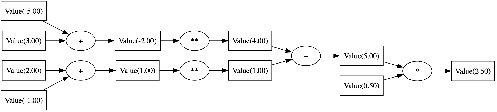

Building a basic autograd engine from scratch
Jan 19th, 2024This post reimplements micrograd (Andrej Karpathy’s tiny autograd engine, written for teaching) from scratch. The point is to see how backpropagation actually works under the hood of frameworks like PyTorch.
What is an autograd engine?
An autograd engine is the piece of a deep learning framework that computes derivatives automatically so you don’t have to write them out by hand.
A minimal PyTorch example — we define a loss in terms of w1 and w2, call backward(), and PyTorch fills in .grad on each variable:
import torch
w1 = torch.tensor(2.0, requires_grad=True)
w2 = torch.tensor(3.0, requires_grad=True)
loss = ((w1 - 1)**2 + (w2 - 5)**2) * 0.5
loss.backward()
print(f"∂loss/∂w1 = {w1.grad}")
print(f"∂loss/∂w2 = {w2.grad}")
∂loss/∂w1 = 1.0
∂loss/∂w2 = -2.0
Where the autograd engine fits in backprop
Quick recap of the three steps in training a network, and where the autograd engine plays a part.
Forward pass
The network produces a prediction using the current weights. As it does, the autograd engine records every operation (add, mul, etc.) into a computational graph — nodes are values, edges are the operations that produced them.
Here is the computational graph for the expression loss = ((w1 - 1)**2 + (w2 - 5)**2) * 0.5 with w1 = 2 and w2 = 3:

Backward pass
Once we have the loss, we walk the graph in reverse. For each operation, the engine knows how to compute its local derivative; the chain rule turns these local derivatives into gradients of the loss with respect to every weight:
\[\frac{\partial \text{loss}}{\partial w_1} \qquad \frac{\partial \text{loss}}{\partial w_2}\]Update weights
Use the gradients to nudge each weight, typically with gradient descent (learning rate $\alpha$):
\[\left\{ \begin{aligned} w_1 &\leftarrow w_1 - \alpha \cdot \frac{\partial \text{loss}}{\partial w_1} \\ w_2 &\leftarrow w_2 - \alpha \cdot \frac{\partial \text{loss}}{\partial w_2} \end{aligned} \right.\]Implementing the engine
Arithmetic on Value
We want a Value class that behaves like a number, so we can write normal math expressions:
w1 = Value(2.0)
w2 = Value(3.0)
loss = ((w1 - 1)**2 + (w2 - 5)**2) * 0.5
A first pass with addition, subtraction, multiplication, and power by a constant:
class Value(object):
def __init__(self, data):
self.data = data
def __repr__(self):
return f"Value(data={self.data:.2f})"
def __add__(self, other):
other = Value(other) if isinstance(other, (int, float)) else other
return Value(self.data + other.data)
def __radd__(self, other):
return self + other
def __sub__(self, other):
return self + (-1 * other)
def __mul__(self, other):
other = Value(other) if isinstance(other, (int, float)) else other
return Value(self.data * other.data)
def __rmul__(self, other):
return self * other
def __pow__(self, k):
return Value(self.data ** k)
Calculations now work:
w1 = Value(2.0)
w2 = Value(3.0)
loss = ((w1 - 1)**2 + (w2 - 5)**2) * 0.5
print(loss)
Value(data=2.50)
Tracking the computational graph
To backpropagate later, every result needs to remember which Values it came from. We add a children set on each new Value that holds references to its inputs:
class Value(object):
- def __init__(self, data):
+ def __init__(self, data, children={}):
self.data = data
+ self.children = children
def __repr__(self):
return f"Value(data={self.data:.2f})"
def __add__(self, other):
other = Value(other) if isinstance(other, (int, float)) else other
- return Value(self.data + other.data)
+ return Value(self.data + other.data, children={self, other})
def __radd__(self, other):
return self + other
def __sub__(self, other):
return self + (-1 * other)
def __mul__(self, other):
other = Value(other) if isinstance(other, (int, float)) else other
- return Value(self.data * other.data)
+ return Value(self.data * other.data, children={self, other})
def __rmul__(self, other):
return self * other
def __pow__(self, k):
- return Value(self.data ** k)
+ return Value(self.data ** k, children={self})
We can now inspect what produced a result:
w1 = Value(2.0) + 3
print(w1.children)
{Value(data=2.00), Value(data=3.00)}
Storing gradients
Add a grad field, initialized to zero:
def __init__(self, data, children={}):
self.data = data
self.children = children
+ self.grad = 0.0
Backpropagation
The goal is to compute, for every weight $w_i$:
\[\text{grad}_{w_i} = \frac{\partial \text{loss}}{\partial w_i}\]We start at the end of the graph, where the derivative of the loss with respect to itself is trivially 1:
\[\frac{\partial \text{loss}}{\partial \text{loss}} = 1\]Then at each node, knowing the gradient of the loss with respect to that node’s output, we push gradients back into its inputs using the chain rule.
Addition
Given $y = w_1 + w_2$ and the gradient $\text{grad}_y$ of the output, find $\text{grad}_{w_1}$ and $\text{grad}_{w_2}$. Chain rule:
\[\text{grad}_{w_1} = \frac{\partial \text{loss}}{\partial w_1} = \frac{\partial \text{loss}}{\partial y} \times \frac{\partial y}{\partial w_1} = \text{grad}_y \times 1 = \text{grad}_y\]and symmetrically $\text{grad}_{w_2} = \text{grad}_y$. Addition just forwards the output gradient to each input.
We attach a backward() closure to the result that does this when called:
def __add__(self, other):
if isinstance(other, int) or isinstance(other, float):
other = Value(other)
v = Value(self.data + other.data, children={self, other})
def backward():
self.grad = v.grad
other.grad = v.grad
v.backward = backward
return v
There’s a bug to fix: when a variable appears multiple times in the graph (e.g. $y = w_1 + w_1$), the assignment self.grad = v.grad overwrites on the second visit. We’d get $\text{grad}_{w_1} = \text{grad}_y$ instead of the correct $2\,\text{grad}_y$.
Switching to += accumulates contributions from every path the variable participates in:
def __add__(self, other):
if isinstance(other, int) or isinstance(other, float):
other = Value(other)
v = Value(self.data + other.data, children={self, other})
def backward():
- self.grad = v.grad
+ self.grad += v.grad
- other.grad = v.grad
+ other.grad += v.grad
v.backward = backward
return v
Side effect of using +=: gradients have to be reset to zero before each backward pass. We’ll do that later.
Multiplication
Same idea, different derivative. For $y = w_1 \times w_2$, the chain rule gives:
\[\text{grad}_{w_1} = \frac{\partial \text{loss}}{\partial w_1} = \frac{\partial \text{loss}}{\partial y} \times \frac{\partial y}{\partial w_1} = \text{grad}_y \times y\]and symmetrically $\text{grad}_{w_2} = \text{grad}_y \cdot w_1$. The backward() closure becomes:
def __mul__(self, other):
if isinstance(other, int) or isinstance(other, float):
other = Value(other)
v = Value(self.data * other.data, children={self, other})
def backward():
self.grad += v.grad * other.data
other.grad += v.grad * self.data
v.backward = backward
return v
Power
For $y = w^k$ (with $k$ a constant), the chain rule gives:
\[\text{grad}_{w} = \frac{\partial \text{loss}}{\partial w} = \frac{\partial \text{loss}}{\partial y} \times \frac{\partial y}{\partial w} = \text{grad}_y \times kw^{k-1}\]The __pow__ becomes:
def __pow__(self, k):
v = Value(self.data ** k, children={self})
def backward():
self.grad += v.grad * k * (self.data ** (k-1))
v.backward = backward
return v
Leaf nodes
Inputs and constants have no children, so their backward() does nothing. Set a no-op default in the constructor:
def __init__(self, data, children={}):
self.data = data
self.children = children
self.grad = 0.0
+ self.backward = lambda: None
Full Value class
class Value(object):
def __init__(self, data, children={}):
self.data = data
self.children = children
self.grad = 0.0
self.backward = lambda: None
def __repr__(self):
return f"Value(data={self.data:.4f})"
def __add__(self, other):
if isinstance(other, int) or isinstance(other, float):
other = Value(other)
v = Value(self.data + other.data, children={self, other})
def backward():
self.grad += v.grad
other.grad += v.grad
v.backward = backward
return v
def __radd__(self, other):
return self + other
def __sub__(self, other):
return self + (-1 * other)
def __mul__(self, other):
if isinstance(other, int) or isinstance(other, float):
other = Value(other)
v = Value(self.data * other.data, children={self, other})
def backward():
self.grad += v.grad * other.data
other.grad += v.grad * self.data
v.backward = backward
return v
def __rmul__(self, other):
return self * other
def __pow__(self, k):
v = Value(self.data ** k, children={self})
def backward():
self.grad += v.grad * k * (self.data ** (k-1))
v.backward = backward
return v
Gradients across the whole graph
To run backward() on a node, its output’s gradient must already be set. That means we need to process parents before children — a reverse topological sort of the graph.
def revtopo(graph):
visited = []
def walk(g):
if g not in visited:
for child in g.children:
walk(child)
visited.append(g)
walk(graph)
visited.reverse()
return visited
Seed the loss with gradient 1 (since $\partial \text{loss} / \partial \text{loss} = 1$), then call backward() on every node in reverse topological order:
w1 = Value(2.0)
w2 = Value(3.0)
loss = ((w1 - 1)**2 + (w2 - 5)**2) * 0.5
loss.grad = 1.0
for node in revtopo(loss):
node.backward()
print(f"∂loss/∂w1 = {w1.grad}")
print(f"∂loss/∂w2 = {w2.grad}")
∂loss/∂w1 = 1.0
∂loss/∂w2 = -2.0
Same numbers as the PyTorch snippet at the top.
Optimizing the loss
The training loop is the same pattern PyTorch uses: forward → zero grads → seed loss grad to 1 → backward → update with $w \leftarrow w - \alpha \cdot \text{grad}_w$. Below with $\alpha = 0.5$:
w1 = Value(2.0)
w2 = Value(3.0)
params = [w1, w2]
for i in range(10):
# forward pass
loss = ((w1 - 1)**2 + (w2 - 5)**2) * 0.5
print(loss)
# backward pass
for p in params:
p.grad = 0.0
loss.grad = 1.0
for node in revtopo(loss):
node.backward()
# update gradients
for p in params:
p.data -= 0.5 * p.grad
Value(data=2.5000)
Value(data=0.6250)
Value(data=0.1562)
Value(data=0.0391)
Value(data=0.0098)
Value(data=0.0024)
Value(data=0.0006)
Value(data=0.0002)
Value(data=0.0000)
Value(data=0.0000)
Loss collapses to zero and the parameters converge to their optima ($w_1 = 1$, $w_2 = 5$):
print(w1, w2)
Value(data=1.0010) Value(data=4.9980)
Further reading
Karpathy’s own lecture goes much further — he builds micrograd from scratch and then trains a small feed-forward network with it. Worth watching: